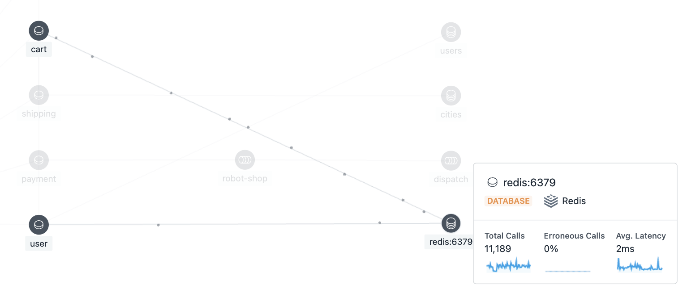

Robotshopを理解するノート
Robotshopはマイクロサービスアーキテクチャで開発された架空のロボット専門ECサイト。 IBMが買収する前からInstana社が作っているものっぽい。Java/Go/Node.js/RabbitMQ/MongoDB/PostgreSQLなど諸々のテクノロジーを使ってる。フロントはAngular。一つ一つのサービスはたいしたコード量ではないが、無理やり複雑な作りにしてInstanaでの監視デモ映えをよくしている印象をうける。とりあえず各サービスがなにをしているかを読み解きながら、日本語対応+リファクタリングしていく。
やりたいこと
- フロントをFlutterで作り直す。iOS + WebApp
- express系のサービスで使ってるpino-loggerがdeprecatedになってるのでhttp-pinoに変更する
- build時のnpm i でエラーがたくさん出てる
- Ratingをレビューにかえ、コメント、画像をアップロードできるようにする
- ユーザー登録・認証を実装する
- Webアプリモニタリング・モバイルアプリモニタリングを試す
色々やりたいことあるが、残り1ヶ月...形見として使ってもらえるように必要十分なアプリを作る。というかAngular1.8ってすごい古いな...入社したときはじめて触ったAngularですら2系だったぞい...。
既存のアーキテクチャ理解
Robotshopのソースコードはこちら
コンテナ化されたアプリケーションの管理・監視を体験するように作られた。マイクロサービスのリファレンスを目指して作られたものではないが、動かすことでコンセプトの理解には役立つと思う。セキュリティは全く考慮していない、エラーハンドリングはつぎはぎだらけ。
podman-compose up で実行。佐川のM1環境はmysqlが立ち上がらなかったため、mysqlのバージョンを8.0に変えた。結果、JDBCの更新とかが必要そう。Java系のサービスがUnhealtyになってる。
(Shippingサービス別にいらなくね？)とりあえずmySQLで何管理してるか見てみる。ユースケースに必須だったら修正する。
- Node.js（Express）
- カタログ
- カート
- ユーザー認証
- Java（Spring）
- 配送（国コードと都市名取得するだけ...）
- PHP(Apache)
- レーティング
M1環境で動かす
mySQLでエラーが出てしまうので、docker-compose.yamlを以下に変える。
mysql:
build:
context: mysql
image: ${REPO}/rs-mysql-db:${TAG}
platform: linux/amd64
cap_add:
- NET_ADMIN
networks:
- robot-shop
logging:
<<: *logging
また、Rabbitmqの管理UIや、ローカル環境からmongodb、mysqlに接続したいのでportsを追加する。最終的に更新したdocker-compose.yamlは以下の通り
| docker-compose.yaml | |
|---|---|
1 2 3 4 5 6 7 8 9 10 11 12 13 14 15 16 17 18 19 20 21 22 23 24 25 26 27 28 29 30 31 32 33 34 35 36 37 38 39 40 41 42 43 44 45 46 47 48 49 50 51 52 53 54 55 56 57 58 59 60 61 62 63 64 65 66 67 68 69 70 71 72 73 74 75 76 77 78 79 80 81 82 83 84 85 86 87 88 89 90 91 92 93 94 95 96 97 98 99 100 101 102 103 104 105 106 107 108 109 110 111 112 113 114 115 116 117 118 119 120 121 122 123 124 125 126 127 128 129 130 131 132 133 134 135 136 137 138 139 140 141 142 143 144 145 146 147 148 149 150 151 152 153 154 155 156 157 158 159 160 161 162 163 164 165 166 167 168 169 170 171 172 173 174 175 176 177 178 179 | |
ローカルで動かすときは以下コマンドを実行。/robot-shopで。
各種サービスへのアクセスはこんな感じ。 - web画面: localhost:8080 - mySQL: localhost:3306 - RabbitMQ管理画面: localhost:15672 - mongoDB: localhost:27018
DBeaverとかVSCodeの拡張機能とかで各種DBにアクセスして初期登録データを見たりした。
やり方気になる方は参考情報にまとめました。
1. Catalogue（商品リスト系）
mongoDBから取得した商品リストを返すAPIとか。Node.js(Express)。API用意してあるのは4つ。
- /health → ヘルスチェック
- /products → 全ての商品
- /product:sku → SKU単位
- /product::cat → カテゴリー指定の商品一覧
- /categories → カテゴリー一覧
- /search/:text → テキスト検索
InstanaでNode.jsをモニタリングするときはアプリ側にコレクターを追加しておくしておく必要がある。
でコレクターを追加したあとで読み込みのコードを追加。const instana = require('@instana/collector');
// init tracing
// MUST be done before loading anything else!
instana({
tracing: {
enabled: true
}
});
Spanの作成もしてる。
let span = instana.currentSpan();
span.annotate('custom.sdk.tags.datacenter', dcs[Math.floor(Math.random() * dcs.length)]);
ロボットショップだとロギングツールとしてpinoってやつをいれてる。express-pino-logger
これはInstanaにログ送られるの...?たぶんRobotshopのころはログ機能が実装されてないからやってないと思われる。今ならできそう。
Node.js - InstanaのLogger設定
初期化後のロガーの設定 instana.setLogger(logger) を使用して、デフォルトの bunyan ロガーの代わりにカスタム・ロガーを @instana/collector に提供します。 前述のように、他のパッケージを要求/インポートする前に、初期化関数 ( require('@instana/collector')によって返される) を即時に呼び出す必要があります。そうしないと、Instana の自動トレースは部分的にしか機能しません。 特に、ロギング・パッケージ (例えば、bunyan、pino、または winston) を要求する前に、Instana を初期化する必要があります。 Instana を初期化する前にロギング・パッケージを要求すると、Instana にログ・メッセージは表示されません。 一方、独自のロガーを Node.js コレクターに渡して、そのログ・メッセージの形式が残りのアプリケーションのログ・メッセージと同じになり、同じログ・ファイル/宛先に書き込まれるようにすることが必要な場合もあります。 ロガーをコレクターの初期化関数に渡す場合は、Instana を初期化する前にそのロギング・パッケージを要求する必要があります。 この循環依存関係を解決するために、@instana/collector は、最初にカスタム・ロガーなしで Instana を初期化してから、後でロガーを設定するための関数 setLogger を提供します。 具体的な例を示すために、以下はサポートされていません。 // WRONG const instana = require('@instana/collector'); // The bunyan package will not be instrumented by Instana, because it is // required *before* Instana has been initialized. const bunyan = require('bunyan'); const logger = bunyan.createLogger(...); // Now Instana is initialized, after the logging package has already been // required. This is too late! const instana = instana(); // TOO LATE! instana.setLogger(logger); 代わりに、最初にロガーなしで Instana を初期化してから、他のものを要求します。 次に、後でロガーが必要になり、初期化されたときに、Instana が使用するロガーを設定します。 // Correct: Call the initialization function immediately. // (Pay attention to the extra pair of parantheses at the end of the line.) const instana = require('@instana/collector')(); // Require and initialize your logging package. const bunyan = require('bunyan'); // Create your logger(s). const logger = bunyan.createLogger(...); // Set the logger Instana should use. instana.setLogger(logger); Instana からのログ出力の最初の数行 (初期化手順中) は Instana のデフォルトの bunyan ロガーでログに記録されますが、instana.setLogger(logger) 呼び出し後のすべてのものは、設定されたロガーでログに記録されます。 さらに、アプリケーションのログ出力が Instana のダッシュボードの「ログ・メッセージ」タブに正しく表示されます (表示されるログ呼び出しは、重大度が「WARN」以上のもののみです)。 Bunyan または Pino ロガーを setLogger に渡すと、Node.js コレクターは、同じログ・レベルとターゲット・ストリームを使用して所定のロガーの子を作成します。 他のロギング・モジュールも、ログ・レベル debug、info、warn、および error の機能を提供する限り、サポートされます。 この場合 Node.js コレクターは子ロガーを作成するのではなく、指定のロガーをそのまま使用します。 @instana/collector に提供するロガーで必要なログ・レベルを設定するのはお客様の責任であることに注意してください。 @instana/collector から予期しないデバッグ・ログが表示される場合、レベルが info または warn に設定されているロガーを必ず渡してください。MongoDB（商品リスト・ドキュメント）
Node.jsがやり取りしてる。Mongoのバージョンは5。
COPY *.js /docker-entrypoint-initdb.d/で起動時に2つのスクリプトを流すようになってる。
1. catalogue.js
商品リスト。products: {sku: 'Watson', name: 'Watson', description: 'Probably the smartest AI on the planet', price: 2001, instock: 2, categories: ['Artificial Intelligence']}
2. users.js
登録済みユーザーリスト。users: {name: 'user', password: 'password', email: 'user@me.com'},
ちなみに今回は認証を必要としていないmongoのため、Instanaセンサーが自動で構成されてるっぽい。
アクションは不要です。 認証が無効になっている MongoDB のモニターは、 configuration.yaml ファイルに構成を指定しなくても自動的に行われます。
認証が有効になってるmongoDBの監視
MongoDBをモニターするには、以下の最小限の役割を持つユーザーを作成する必要があります。 read - admin データベース上 clusterMonitoer - admin データベース上 read - local データベース上 mongo シェルで、 admin データベース内に Instana エージェントのユーザーを作成します。 admin ユーザーとして認証します。 MongoDB 3.x 以降のバージョンの場合は、 createUser コマンドを実行します。 !!! alert MongoDB Atlas を使用している場合、ユーザー (割り当てられたすべての役割を持つ) は、MongoDB Atlas 管理コンソールを介してのみ作成できます。 ユーザーが作成された後、エージェント構成ファイルでそのユーザーを構成できます。 sourceは、ユーザーが定義されているデータベースまたは認証ソースを参照します。 詳しくは、MongoDB 資料を参照してください。Redis
redis:6.2です。InstanaのUI上でdependenciesを確認すると、カートとユーザーから使われているようです。 
Info
RedisはInMemoryDBです。早いやつ。無料、早い、NoSql、メモリ上で動く、KVS。このくらいは知ってる。docker-compose upでredisを立ち上げ、カートとユーザーから接続して使われている。OpenShiftにデプロイするときは、redis --- StatefulSetで使ってる。
user/server.js内でredis操作をしてるところを見てみます。
// node.jsにインポートしたredisクライアントからredisへ接続する
var redisClient = redis.createClient({
host: process.env.REDIS_HOST || 'redis'
});
redisClient.on('error', (e) => {
logger.error('Redis ERROR', e);
});
redisClient.on('ready', (r) => {
logger.info('Redis READY', r);
});
//省略
// use REDIS INCR to track anonymous users
// robotshopはログインしないで使えるので、ランダムにredisでIDを採番し、Instanaでのでもをしやすくしている気がする
同じように、cart/server.jsも見てみる。
```js
function saveCart(id, cart) {
logger.info('saving cart', cart);
return new Promise((resolve, reject) => {
redisClient.setex(id, 3600, JSON.stringify(cart), (err, data) => {
if(err) {
reject(err);
} else {
resolve(data);
}
});
});
}
ログインしている状態でカートに商品を追加すると、redisに情報が登録される。コードとしてはredisClient.setexは3つの引数を渡していて、それぞれが登録するKey、ttl、データです。KeyはユーザーIDで、カートの情報は1時間だけ保存される設定になってますね。
実際に見てみたらこんなデータが入ってました。（試したときのユーザーIDはsagawa）
Redis > db0 > sagawa
app.get('/uniqueid', (req, res) => { // get number from Redis redisClient.incr('anonymous-counter', (err, r) => { if(!err) { res.json({ uuid: 'anonymous-' + r }); } else { req.log.error('ERROR', err); res.status(500).send(err); } }); });
この流れで、次はUserを見ていく。Node.js(express)だからわかりやすいはず。
## ユーザー（認証系）
実際の認証機能は実装されてない。今まで見てきた例と同じように、Node.js用のinstana/collectorをrequireで読み込んだ後、tracingを有効化するコードから始まる。ユーザーはmongodbとredisと通信するため、この2つのクライアントも読み込んでる。ロギングはpino。
このサービスの提供するAPIは以下
1. /health
1. /uniqueid → アノニマス用にID採番
2. /check/:id → ユーザーが存在するかチェック
3. /users → すべてのユーザーを返却。デバッグ用
4. /login[post] → 認証。名前とパスワードを平文で確認
5. /register[post] → ユーザー登録
6. /order/:id → 登録済みユーザーの場合、オーダー情報を返す
7. /history/:id → 登録済みユーザーの場合、過去履歴を返す
<details>
<summary>参考。history/:idのレスポンス</summary>
## ペイメント
支払い金額の計算と、架空の支払い処理を受け付けてrabbitMQにわたしている。python（Flask）で実装。このサービス内で使っているpythonのモジュールは以下。
- instana
- usagi
- Flask
- requests
- pika
- prometheus_client
- opentracing
Flaskは使ったことあるメンバー多そう。pythonの場合も、Instanaは手動でコレクターをいれないといけないのかと思いきや、KubernetesにAutoTrace WebHookというというものを入れたら自動でセットアップしてくれるらしい。
[pythonのモニター](https://www.ibm.com/docs/ja/instana-observability/current?topic=technologies-monitoring-python-instana-python-package)
> Instana は、 Python アプリケーションを Instana AutoTrace™によって自動的にインスツルメントします。 ただし、パッケージを手動でインストールする場合は、以下の 手動インストール を参照してください。
> Instana AutoTrace WebHook は、 Kubernetes クラスター全体にわたって、Instana を使用して Python アプリケーションをモニターするために必要なすべてのものを自動的にセットアップする Kubernetes Mutable WebHook Admission Controller の実装です。Instana AutoTrace WebHook を Kubernetes クラスターにインストールする場合は、それらのクラスターで実行される Python アプリケーションをトレースするための手動ステップを実行する必要はありません。
> Python アプリケーションおよび Instana エージェントが Kubernetesによって管理されている場合は、 Kubernetes ネットワーク・アクセス の資料で、このセットアップに必要な構成に関する情報を確認してください。
> 注: Instana AutoTrace WebHook は、 Python センサー 2.0.0 以降のみをインストールし、 Python 2.7などのレガシー・ランタイムのサポートは提供しません。 サポートされている関連コンポーネントのバージョンを確認するには、 「サポートされるコンポーネント」&「バージョン」を参照してください。 レガシー・ランタイムを使用する必要がある場合は、以下の「 手動インストール 」セクションを参照してください。
エンドポイントはヘルスチェックとメトリクス(どちらもGET）と、支払いのPOST API。/pay/<id>は少し処理が多いが、だいたい以下の流れ。
1. 受け取ったカートIDに基づいてカートの内容をログに出力
1. ユーザーが実際に存在するかどうかを確認します。存在しない場合、ユーザーは匿名として扱う
1. カートが有効なものかチェック。例えば、トータルが0や配送アイテムがカート内にない場合は無効
1. ダミーの支払いゲートウェイリクエストを実行
1. 購入されたアイテムのメトリクスを更新
1. ユニークな注文IDを生成し、RabbitMQのキューに注文を追加
2. 匿名ユーザーではない場合、注文履歴としてカート情報をbodyとしてユーザーAPIをコール(users/order/{id})
3. カートを削除(カートサービスにコール: http://{cart}:8080/cart/{id})
4. 注文IDをクライアントに返却
キューにはオーダーIDとユーザーID、カートの情報を登録している。登録処理についてはファイルが別れていて、同じディレクトリのrabbitmq.pyで定義されてる。
```python
import json
import pika
import os
class Publisher:
# 環境変数やデフォルト値を用いてRabbitMQの設定を定義
HOST = os.getenv('AMQP_HOST', 'rabbitmq')
VIRTUAL_HOST = '/'
EXCHANGE='robot-shop'
TYPE='direct'
ROUTING_KEY = 'orders'
def __init__(self, logger):
# コンストラクタでpikaの接続パラメータとログオブジェクトを初期化
self._logger = logger
self._params = pika.connection.ConnectionParameters(
host=self.HOST,
virtual_host=self.VIRTUAL_HOST,
credentials=pika.credentials.PlainCredentials('guest', 'guest'))
self._conn = None
self._channel = None
def _connect(self):
# 接続が必要な場合、または既存の接続/チャネルが閉じている場合にRabbitMQに接続
if not self._conn or self._conn.is_closed or self._channel is None or self._channel.is_closed:
self._conn = pika.BlockingConnection(self._params)
self._channel = self._conn.channel()
self._channel.exchange_declare(exchange=self.EXCHANGE, exchange_type=self.TYPE, durable=True)
self._logger.info('connected to broker')
def _publish(self, msg, headers):
# 指定されたメッセージとヘッダーを使ってRabbitMQにメッセージをパブリッシュ
self._channel.basic_publish(exchange=self.EXCHANGE,
routing_key=self.ROUTING_KEY,
properties=pika.BasicProperties(headers=headers),
body=json.dumps(msg).encode())
self._logger.info('message sent')
# 必要に応じて再接続しながらメッセージをパブリッシュ
def publish(self, msg, headers):
if self._channel is None or self._channel.is_closed or self._conn is None or self._conn.is_closed:
self._connect()
try:
self._publish(msg, headers)
except (pika.exceptions.ConnectionClosed, pika.exceptions.StreamLostError):
self._logger.info('reconnecting to queue')
self._connect()
self._publish(msg, headers)
def close(self):
# RabbitMQとの接続を閉じる
if self._conn and self._conn.is_open:
self._logger.info('closing queue connection')
self._conn.close()
登録したデータが誰にサブスクライブされてるかはこの後出てくるはず。
rabbitmq
docker-compose.yaml > docker-compose.yamlってできるの？
robot-shop/paymentのなかのdocker-compose.yamlで定義されてる。pythonからMQに登録して、キューに貯められる。サブスクライバーは.....Goか。Instanaの依存性マップ見たら理解しやすい。。まじで分からんなんだこりゃ！って状態でも、ちゃんと理解しようとするとInstana便利ですね。

Dispatch(Go)
RabbitMQに接続し、注文メッセージを受信して処理するサービスを提供。Goのフレームワークは分からない。
Consumeメソッドの第3引数がtrueになっているが、この引数はautoAck（自動確認）、trueの場合、メッセージを受信した直後に自動的にRabbitMQに対してACK（確認）を送信する。ACKを受け取ったRabbitMQはそのメッセージをキューから安全に削除できると判断する。Info
ということは、Dispatchを一時的に落とすとキューの滞留がInstanaで見れるようになる！あとで試してみる。
以下、ファイルの中身を大まかに説明。
1. インポート部:
1. amqp: RabbitMQとの通信
2. opentracing: 分散トレーシング用のライブラリ（これ今はopentelemetryになったやつだ）
3. log,time,strconv,fmt,encoding/json よく使うやつ
2. 定数と変数を定義（37行目くらいまで）
3. connectToRabbitMQ関数:
1. RabbitMQに接続を試みる関数。
2. 接続に失敗した場合は1秒待って再度接続を試みます。
4. rabbitConnector関数:
1. RabbitMQに再接続するためのループ処理。接続が閉じられたら再度接続を試みる。また、交換器、キューの作成やキューへのバインドなど、RabbitMQのセットアップもこの関数で行います。
5. failOnError関数:
1. エラーチェック用のヘルパー関数。エラーが存在する場合、ログを出力しプログラムを終了します。
6. getOrderId関数:
1. 注文メッセージから注文IDを取得する関数。
7. createSpan関数:
1. OpenTracingを使用して、受信した注文のトレーシング情報を生成または更新します。この関数では、トレーシングの子スパンを生成したり、エラーのシミュレーションを行ったりします。
8. processSale関数:
1. 注文処理のトレーシング情報を作成する関数。
9. main関数:
1. プログラムのエントリーポイントです。
- 乱数のシードを初期化。
- トレーサーを設定。
- 環境変数からRabbitMQのホストやエラーパーセンテージを取得。
- RabbitMQへの接続やメッセージの消費などのルーチンを非同期で実行。
- このサービスは、RabbitMQから注文メッセージを受信して、そのメッセージに関連するトレーシング情報を生成/更新する役割を持っています
mySQL
Kubernetes/OpenShiftにデプロイした後
各サービスとAgentとの通信について ほとんど全てのデプロイメントに環境変数でAgent Hostを渡してる。 どこのAgentにデータを送るか？自分が動いているワーカーノードのIPをfieldRef.status.hostIPで取得してSet。
Node.jsとかはCollectorをインポートしているが、こいつがAgentにデータを送って、Agentがデータをサンプリング/整形してバックエンドに送っているのか！理解。
fieldRefで色々情報取れるの知らなかった。()
Information available via fieldRef For some Pod-level fields, you can provide them to a container either as an environment variable or using a downwardAPI volume. The fields available via either mechanism are:
You can get more detailed information from my blog post about this sample microservice application.
This sample microservice application has been built using these technologies:
NodeJS (Express) Java (Spring Boot) Python (Flask) Golang PHP (Apache) MongoDB Redis MySQL (Maxmind data) RabbitMQ Nginx AngularJS (1.x)